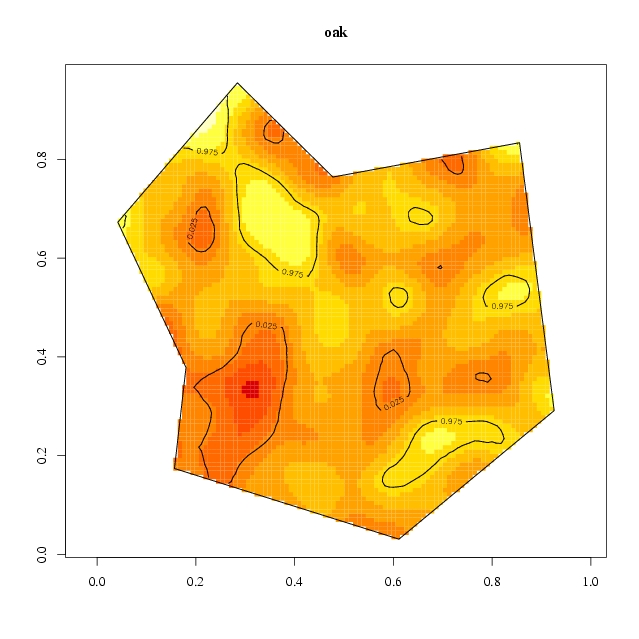
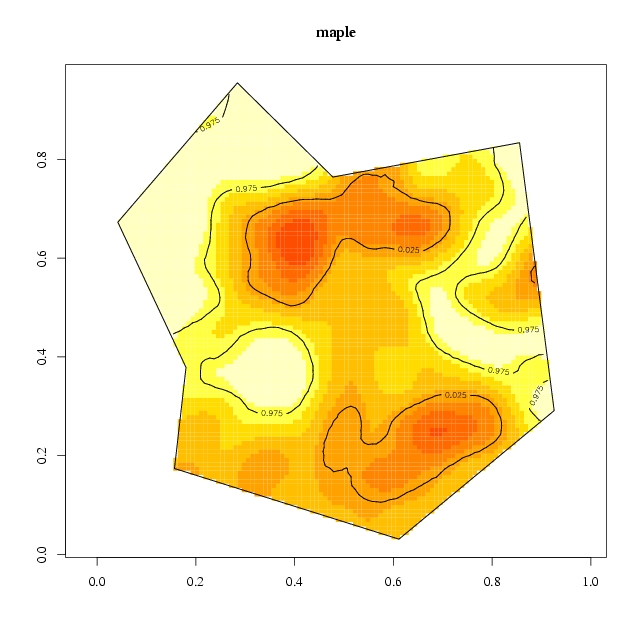
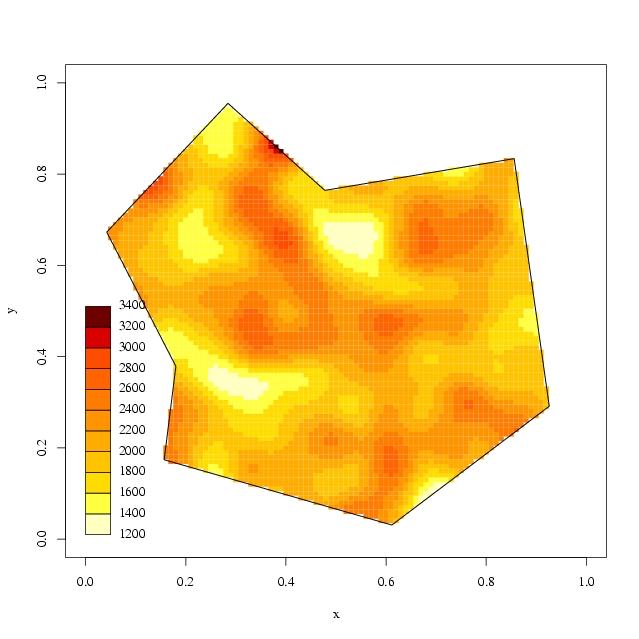

The Lansing Woods tree data we used consist of oak, hickory and maple trees, confined within a arbitrary polygonal area.
SpatialkernelThis web page tries to illustrate the kernel smoothing methods
implemented and other useful functions for spatial point patterns
analysis in the R package Spatialkernel.
Two kinds of kernel smoothing methods are implemented in the R
package Spatialkernel, kernel
regression estimate of the type-specific
probabilities
in a multivariate Poisson point process and kernel density
estimate of the intensity function of an inhomogeneous Poisson point
process with edge-correction algorithm
implemented against an
arbitrary polygon area. An example also gives a brief application of
the functionality in the package.
If you cannot view this web page properly, please download a
pdf version of this page from Section Downloads.
Spatial Multivariate
Poisson Point Process
The multivariate point process we discussed here is a
inhomogeneous Poisson
process that generates points in two-dimensional space with each point
marked with one of several categorical types. The data are a
partial realisation of the Poisson point process
with categorical component processes being stochastically
independent. Data of this kind are
usually
denoted as (xi, mi), where xi are the spatial
locations and mi are the
marked categorical types, within a study area of A. Without losing
generalization, we suppose mi
= 1, 2, … , and mi
= k
means that
the point at spatial location xi is of kth category of
types.
Spatial segregation exists if particular types of points predominate in particular regions in the study area. Spatial segregation effects can be describe in terms of the component intensity functions λk(x). If λj(x) ⁄ λk(x) = ρij is a constant, then no spatial segregation exists, different categorical type of data points are randomly intermingled.
For the purpose of spatial segregation analysis, we do not have to estimate the component intensity functions. We introduce the type-specific probabilities, pk(x) = λk(x) ⁄ ∑jλj(x), the conditional probability that we know a point is at location x, that point is of kth categorical type with probability pk(x). Therefore, the null hypothesis of no segregation can be described as pk(x) = pk, a constant.
pk(x) = ∑j wh(x - xj) I(mj = k) ⁄ ∑j wh(x - xj),
where wh(x) = w(x ⁄ h) ⁄ h2, w(x) is a standard kernel function, I is the indicator function. Note that we use pk(x) for both variables and their estimators. Without causing confusion, we will use the same notations for both variables and their estimators thereafter.
We proposed to select a bandwidth for the kernel regression by maximizing the cross-validated log-likelihood function based on the leave-one-out type-specific probability estimator at data points,
pk(i)(xi) = ∑j≠i wh(xi - xj) I(mj = k) ⁄ ∑j≠i wh(xi - xj).
Simulations for the Monte Carlo spatial segregation test are sampled by randomly re-labelling of the categorical marks whilst preserving the observed number of points of each categorical type. Pointwise segregation test also being carried out to mark the areas where the estimated type-specific probabilities are significantly greater or smaller than the spatial average. The test statistics chosen is a measurement of the total deviance of estimated type-specific probabilities from their typewise mean values,
T = ∑k ∑j (pk(xj) - pk(.))²,
where pk(.) is the mean of pk(xj) over those j where mj = k.
Spatial segregation analysis can be generalized to multivariate spatial-temporal Poisson point process where each point is marked with a time group (time-period) sequence number. For the spatial-temporal point process, the data are denoted as (xi, mi, ti), where xi are the spatial locations, mi are the marked categorical types, and ti are the time-periods. The spatial locations are within a study area of A.
Within each time-period, we can estimate the type-specific probabilities using kernel regression methods with a common bandwidth selected by the cross-validated log-likelihood functions pooled over time-periods. The kernel regression estimator of thetype-specific probabilities within each time-period is
pk(x, t) = ∑j wh(x - xj) I(mj = k) I(tj = t) ⁄ (∑j wh(x - xj) I(tj = t)).
The null hypothesis of the temporal changes over time-periods is that the spatial patterns of the type-specific probability surfaces of each categorical type will not change over time-periods, that is, pk(x, t) = pk(x), which is constant with respect to the time-periods t. The test statistics adopted is
P = ∑t ∑k ∑j (pk(xj, t) - pk(.)(xj))²,
where pk(.)(xj) is the mean of pk(xj, t) over time-period t. The simulations are sampled from the type-specific probability surfaces, pk(.)(xj), which are the approximate true type-specific probability surfaces under the null hypothesis of no temporal changes over time-periods, preserving the number of points in each time-period.
Intensity Estimation of Inhomogeneous Poisson Point Process
The intensity function of the inhomogeneous spatial Poisson point process can be estimated by the kernel density estimator,
λ(x) = ∑j wh(x - xj) ⁄ ah(x),
where ah(x) = ∫A wh(u - x) du is the edge-correction adjustment factor, proposed by Berman and Diggle (1989).
An example: The Lansing Woods Tree DataR package spatialkernel.
We present the spatial distribution of the three different kind of
trees in an arbitrary polygonal area, the estimated type-specific
probabilities and the estimation of spatial segregation. We also
present the estimated intensity for overall threes with
edge-correction applied against the polygon boundary. Both the kernel
regression estimation of the type-specific
probabilities and kernel density estimation of the overall intensity
use Gaussian
kernel.|  |  |
 |
|  |  |

{kind=link}
{kind=link}
{kind=link}
{kind=link}
{kind=link}